-
Николай Косарев,
Quintiq, Голландия, разработчик и аналитик,
выпуск 2002 года,
прикладная и вычислительная математика.
«Математика идеальна для обучения критическому мышлению и анализу»
Я работаю в отделе разработки оптимизационных алгоритмов голландской компании Quintiq, разрабатывающей решения в сфере управления поставками, планирования производства и персонала, логистики для таких крупных клиентов, как DHL, Walmart, ОАО «Северсталь» и многих других.
В мои обязанности входит взаимодействие с сотрудниками бизнес-подразделений, занимающимися непосредственной работой с прикладными задачами реальной жизни, их консультация и поддержка, а также непосредственно программирование алгоритмов, их интеграция в существующую систему.
Оглядываясь назад, понимаю, что на матфаке недостаточно внимания уделял учебе: мои преподаватели могли дать гораздо больше, чем я впитывал в себя. Конечно, в студенческие годы хочется погулять и весело провести время, но все же мой призыв: учиться, учиться и еще раз учиться! Вдумчиво и осознанно.
“Cамое главное качество я все-таки, кажется, приобрел: способность обучаться самостоятельно, разбираться практически с любой предметной областью, понимать ее закономерности и природу функционирования.
”Считаю, что в этом смысле математика как наука, наш факультет и методы обучения наших преподавателей просто идеально позволяли научиться критическому мышлению и анализу. Воспоминания о студенческих годах исключительно приятные и не только потому, что было весело, беззаботно и интересно в учебе и в отдыхе.
Матфак все-таки для меня был первой настоящей школой жизни, куда более серьезной и ответственной, чем весь мой предыдущий опыт, несмотря на то, что я учился в ФМШЛ №64. Местом, где уважение к студентам, интеллигентность и любовь к знаниям наших преподавателей позволяли почувствовать себя взрослым, причастным к этому большому миру серьезных людей, занимающихся математикой, самой красивой из наук, по моему глубоко субъективному мнению.
-
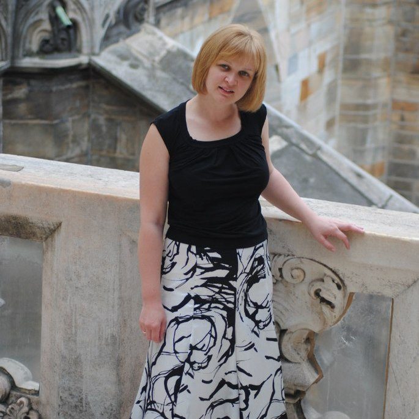
Ольга Кукина,
бизнес-аналитик в селинговом агентстве при ВГТРК, Омск
выпуск 2005 года,
математика.
«Нас учили разбираться в том, что ты делаешь, а не просто зубрить и заучивать»
О том, что я буду поступать в универ, на матфак, а не куда-то еще, я знала задолго до поступления. Папа всю жизнь проработал на матфаке, с самого открытия университета, мама училась тут же. Часто в детстве папа брал меня на работу: на капустники, на «Мисс Математику», на Аукцион. Я всегда думала: «Хорошая работа, сплошные развлечения, вот бы мне сюда». Кроме того, когда я училась в школе, в стенах матфака часто проводили КВН, матбои, олимпиады, конференции и прочие развлечения для школьников, интересующихся математикой. Преподаватели и студенты математического факультета учили нас в летних школах. Поэтому матфак для меня — родное место с самого детства.
Что для меня матфак был в студенческие годы? Да практически всем. Здесь я стала встречаться со своим будущим мужем! Поэтому можно сказать, что матфак определил мою судьбу, как личную, так и профессиональную. Я училась в «научной» группе, и это было очень трудно.
“Нас учили разбираться в том, что ты делаешь, а не просто зубрить и заучивать. Нас учили импровизировать. Учили доводить начатое дело до конца. Закаляли характер.
”Сан Саныч Колоколов, наш завкафедрой, научил быть дисциплинированными. Сколько он с нами возился перед защитой диплома! Ставил нам правильную научную речь, заставлял убирать слова-паразиты, учил, чтобы в тексте не было ничего лишнего, а из рассказа было понятно, о чем идёт речь.
Учиться было очень сложно, зато интересно и весело. Одни Дни математики чего стоят. А подготовка к экзаменам? А контрольные или зачеты? Бегаешь, суетишься, спрашиваешь у старшекурсников: «как?», «что?», «дайте задачки», «дайте лекции», «объясните» …На экзаменах обязательно кто-то дежурил под дверью, собирал все задачки, потом они как-то распределялись среди студентов, готовились сообща.
В качестве научного руководителя выбрала Виктора Петровича Ильева. Дипломная работа, а потом и работа в аспирантуре были связаны с теорией графов. Виктор Петрович меня научил очень важной вещи: если есть возможность попробовать что-то сделать, надо попробовать. Потом такой возможности не будет. Это не только про сдачу экзаменов. Это про всё.
Сейчас я работаю бизнес-аналитиком в селинговом агентстве при ВГТРК. Помогаю людям продавать рекламу. Я изучаю то, как работают другие люди (планировщики рекламы, продажники, юристы, бухгалтерия), все это систематизирую, анализирую и подсказываю им, как работать лучше и эффективнее. Ставлю задачи разработчикам программных продуктов. Не имея финансово-экономического или юридического образования, а уж тем более образования рекламщика, я говорю людям, как они должны работать. Ко мне прислушиваются. Потому что я могу разобраться в проблеме.
Применяю ли я именно математику в работе? Да, конечно. Я рисую графы бизнес-процессов, простые человеческие действия перевожу в цифры и символы. Жизнь описываю математическими моделями. С 2008 по 2011 годы я сотрудничала плотно с одним программистом, кандидатом математических наук. Разрабатывали систему постановки рекламных роликов в эфир. Механизмы там запрограммированы — будь здоров. Задача минимум 40-критериальная (с большим числом параметров), для каждого рекламного направления — своя специфика.
Нельзя ждать, что ты придешь на работу после защиты диплома и сразу применишь то, чему тебя учили на матфаке. Такое встречается крайне редко. Скорее всего, на работе тебя не заставят брать интегралы или вычислять определители. Тебя заставят делать более сложную вещь, которой учат на матфаке. Тебя заставят думать. На мой взгляд, на других факультетах этому учат плохо или не учат вовсе.
-
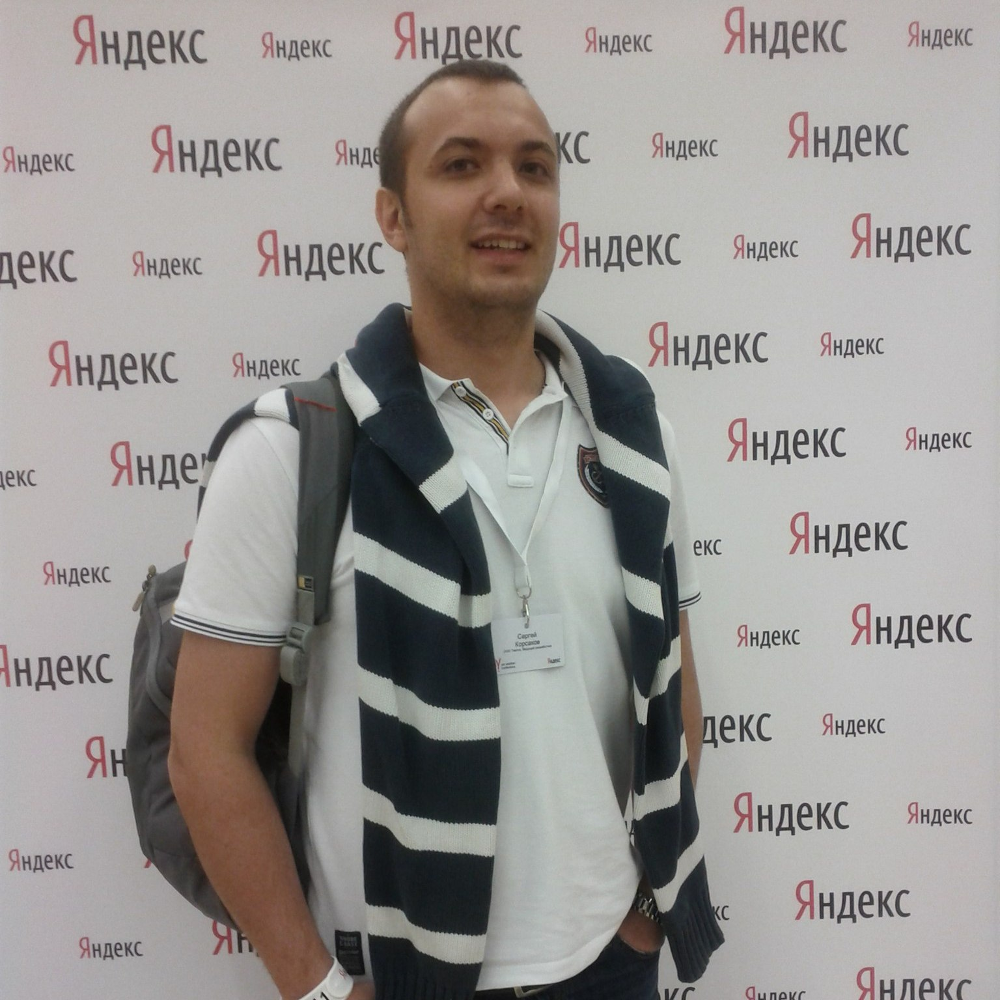
Сергей Корсаков,
Яндекс, Москва, менеджер проектов в отделе контент-системы,
выпуск 2009 года,
прикладная и вычислительная математика.
«Матфак научил меня быть "анти-шестеренкой" и уметь браться за любые задачи и проекты»
Я работаю в компании «Яндекс» менеджером проектов в отделе контент-системы - это то подразделение, которое несет ответственность за полноту, качество, а также свежесть поисковой базы. Каждый день мы придумываем новые способы её улучшения, проводим эксперименты и по их результатам либо внедряем эти способы, либо отказываемся от внедрения. Мы пишем роботов, которые "скачивают интернет", то есть базы данных, где вся эта информация хранится, а так же кучу дополнительных сервисов, которыми мы пользуемся каждый день, чтобы сделать поиск лучше.
Свои воспоминания о математическом факультете я связываю прежде всего с теми людьми, которые меня окружали все время учебы - это и преподаватели, и студенты. На матфаке учится огромное количество умных и талантливых ребят, с которыми очень здорово общаться и дружить. За время учебы я нашел много хороших друзей, с которыми до сих пор общаюсь несмотря на то расстояние, которое нас разделяет.
“Матфак научил меня быть "анти-шестеренкой" и уметь браться за любые задачи и проекты. Действительно, математический факультет является "классическим образованием, после которого можно работать в любой сфере" - именно так мне его преподнес мой завуч С.В.Савченко в 64 лицее, когда объяснял, почему стоит идти учиться на математический факультет и никуда больше, за что я ему бесконечно благодарен.
”Я старался учиться, что мне иногда даже удавалось. По тем предметам, которые нравились, получал хорошие оценки, по другим - не очень. У меня никогда не было цели быть круглым отличником и получить красный диплом.
На самом деле, помимо учебы я успел поучаствовать во многих интересных внеучебных мероприятиях и кругах по интересам, главным из которых, безусловно, был ОргКомитет матфака - группа активных ребят, которые организовывают на факультете различные мероприятия, такие как "Неделя Математики" и "Турнир Претендентов". Помимо этого, я успел провести один сезон в студенческом театре под руководством Н.А.Козорез (ставили "Любовь - это..." по Слаповскому), а также несколько лет играл в КВН в составе команды "Рутинные Истории".
Если бы меня спросили, на какой факультет я бы поступил, если бы мог вернуть прошлое, то я бы без сомнений ответил - только на математический.
-
Евгений Мельников,
ООО «РОСИНТЕР РЕСТОРАНТС СИБИРЬ», г. Новосибирск, Красноярск, Новокузнецк, региональный управляющий
«Благодаря обучению здесь люди становятся успешнее, разумнее и профессиональнее, независимо от того, какую дорогу они выберут в дальнейшем»
Любой человек вспоминает свои студенческие годы с легкой ностальгией и улыбкой. В первую очередь вспоминаются не бессонные ночи перед экзаменами или сложные задачки, а веселые вечеринки, первоапрельские марши на Дне Математика и эйфория от сданной сессии.
И, управляя сетью ресторанов, работая в сфере, казалось бы не имеющей отношения и близко к математике, я с благодарностью вспоминаю учебу. Только потом понимаешь, что на самом деле учат тебя не «теории вероятностей», «математическому анализу» или «преподаванию математики», тебя учат логике, систематизации, умению учиться новому и находить нужную информацию. И абсолютно неважно, чем ты будешь заниматься в будущем, – это поможет тебе достичь успеха.
“Я уверен, что благодаря обучению здесь люди становятся успешнее, разумнее и профессиональнее, независимо от того, какую дорогу они выберут в дальнейшем.
”Требование Семенова А.М. о знании назубок определений - только понимая, что значит то или иное определение в бизнесе, ты сможешь эффективно его использовать
Общение Исаченко Н.А. с тобой на равных, хотя твои знания и рядом не стоят с его знаниями - только такое отношение к менее знающим коллегам заставляет добиться авторитета.
Оптимизм Симанчева Р.Ю. - пессимист никогда не добьется высоких результатов.
Доброта и радушие Лопаткова М.Г. - и ты понимаешь, что успешный человек не обязательно должен быть серьезным и вечно занятым, а обязан быть открытым и находящим время для любого.
Про каждого из наших преподавателей можно писать отдельную книгу. -
Никита Кардаков,
ведущий разработчик в NASP/Plingm, Стокгольм
выпуск 2010 года
«Традиции факультета – очень важная часть нашей жизни»
Я закончил Главный Математический в 2010 году. Сейчас живу и работаю в городе Стокгольме. Среди главных побед последнего времени — Бронзовый Каннский Киберлев за проект, который я делал вместе с Google. А также гордость за нынешние проекты, которые связаны в основном с iOS, VOIP (Voice Over Internet Protocol), звуком и музыкой.
И, конечно, всё это произошло не без участия лучшего факультета в нашем городе. В наше время, во многом благодаря всевозможным интернет-ресурсам, существуют миллионы способов освоить практически любую технологию. Но, как и прежде, без фундаментальной подготовки, которую даёт ИМИТ, стать настоящим профессионалом не так просто.
“После того, как один мой товарищ-филолог прочитал список дисциплин в моём дипломе, он заметил, что это всё для него звучит как список курсов в одной известной школе чародейства и волшебства. На самом деле, примерно так всё и обстоит.
”Преподавателей, которые могут помочь желающему учиться человеку стать хорошим математиком и программистом, очень много. И всё, что рассказывают на факультете, важно. На собеседовании в Калифорнии или в Европе у вас неожиданно спросят про Б-деревья, про которые вам рассказывал Игорь Викторович Ашаев.
сдав экзамен Игорю Викторовичу на втором курсе, вы решите, что всё в этой жизни повидали. Но на первом же практическом занятии третьего курса Павел Лазаревич Дворкин предложит забыть всё, что вы успели узнать до этого. А если вы сдадите четыре раза математический анализ и по разу — комплексный и функциональный анализ Николаю Андреевичу Исаченко, то ваш мозг будет полностью готов к освоению любого навыка на этой планете и в её небольшой окрестности.
Кроме этого, у каждого студента за всё время обучения есть возможность более подробно ознакомиться с конкретной научной областью или технологией. Этому способствует естественное распределение по кафедрам на старших курсах, выбор темы научной работы, широкий спектр факультетских и общеуниверситетских спецкурсов, и, конечно, открытое сообщество студентов и преподавателей.
Я с радостью вспоминаю спецкурс Александра Савельевича Штерна по истории математики, подготовку и участие в мировых чемпионатах по спортивному программированию, отдельные дисциплины, связанные с дискретной математикой и… программированием.
И, конечно, университетский чемпионат по «Что? Где? Когда?». Традиции факультета — очень важная часть нашей жизни. Неделя математики, начинающаяся традиционно первого апреля, — одно из самых ярких событий каждого студента и преподавателя на факультете. Эти традиции, унаследованные во многом у дружественного Новосибирского Государственного Университета, живут уже больше 30 лет.
-
Павел Сумароков,
Al Digit, Омск, директор,
выпуск 2008 года.
«Для достижения высоких целей нужно много трудиться»
Заниматься математикой я начал еще до ОмГУ, когда в 2000-м поступил в 9-й класс лицея 64. Очутившись среди самых умных школьников города, быстро превращаешься из "первого ученика" в человека с растоптанным самолюбием. Тогда это очень помогло научиться трезво оценивать свои силы и понимать, что для достижения высоких целей нужно много трудиться.
В 2003-м со 100%-м результатом по "апрельскому тестированию" я выбрал Математический Факультет. Конкурс был большой, проходной балл составлял 37 из 40, и ситуация повторилась - я очутился среди людей на порядок умнее меня самого. После первой сессии из 120 студентов отчислили примерно 40. Мне посчастливилось сдать экзамены на 4-ки. Впрочем, оценки и документ о высшем образовании не стали самой большой ценностью, вынесенной из стен Университета. После двух лет обучения я перестал бояться трудностей и понял, что мои знания востребованы.
На третьем курсе нам предложили работу в Центре Интернет при ОмГУ. Для любого студента очень важно получить первый опыт, и Математический Факультет дал такую возможность. Мы создали несколько простых программ для городских библиотек, но длинная дорога всегда начинается с первого шага.
После четвертого курса мы с другом были приняты на должности младших Java разработчиков в Luxoft. Тогда это была лучшая компания в Омске, и в очередь к ним выстраивались опытные программисты. Доучившись год, дописав свой компилятор на С++ и сдав последние экзамены, я с большим облегчением, гордостью и радостью получил красный диплом. Сразу после выпуска меня командировали в Канаду к заказчику. Там я узнал многое о процессах разработки и управлении проектами.
“Все время после окончания ОмГУ я ощущал желание развиваться, учиться новому, решать сложные задачи. Миссия высшего образования состоит именно в том, чтобы привить человеку перечисленные навыки. Математический Факультет с ней справился на "отлично".
”В 2009-м, вернувшись в Омск, мы с другом ушли из Luxoft и основали Al Digit. Сегодня в нашей команде 20 разработчиков, и мы пишем мобильные приложения для таких компаний как Газпром, Forex клуб, Nissan.
-
Александр Шестаков,
Wooga, Берлин, разработчик,
выпуск 2010 года.
«Это лучшее в Омске место, в котором преподают Computer Science»
Меня зовут Александр Шестаков, группа МП-504. В данный момент я занимаюсь разработкой мобильных социальных игр в офисе крупнейшего европейского игрока на данном рынке – компании Wooga, находящейся в самом сердце Берлина.
Отзывы на факультет, на котором проучился 5 лет, я пишу немного реже, чем на свежие игры в AppStore, однако сделать это стоит в не меньшей степени, чем поддержать амбициозных разработчиков. Ах да, если бы это был отзыв, то вы бы уже увидели рейтинг, и в данном случае это твердые 5 звезд.
“Итак, что нужно знать про матфак в первую очередь? Это лучшее в Омске место, в котором преподают Computer Science. Мне довелось пообщаться со многими менеджерами и программистами, и сложно не отметить общее представление о выпускниках матфака, как об одних из самых привлекательных кадров на рынке труда. Да, без работы вы не останетесь.
”Не хотите быть программистом? Что ж, ни для кого не секрет, что на математике держатся практически все современные области знаний, как следствие, применение свежеприобретенным знаниям вы сможете найти в совершенно неожиданных местах.
Как помогла математика мне? Статистика и теория вероятностей помогли зарабатывать покером. Понимание рядов Фурье помогает в создании электронной музыки. Я уже не говорю, что логикой мы пользуемся каждый день, когда выносим оценочные суждения, а технический склад ума незаменим в цифровую эпоху.
Поступать на матфак или выбрать более “понятный” факультет? Вопрос сложный в первом приближении, однако, если вы любите точные науки и хотели бы сделать успешную карьеру в сфере IT – добро пожаловать, выбора у вас практически нет.
-
Юрий Дворжецкий,
Luxoft, Омск, разработчик.
«Всем что у меня сейчас есть, я обязан матфаку!»
Всем привет! Меня зовут Юра, я выпускник и аспирант ИМИТ, сейчас работаю Java-программистом в Luxoft. Разрушу несколько мифов про ИМИТ, а выводы делайте сами :)
Математика - это скучно.
Математика в ИМИТ - это абсолютно не та математика, которой учат в школе!!! Здесь Вы узнаете про нейронные сети, теорию компиляторов и трансляторов, и многое-многое другое интересное!
Все в ИМИТ только учатся.
Такого количества развлекательных мероприятий нет ни на одном факультете! :) Побывав на факультетских выездах на базы отдыха, Турнире Претендентов и конкурсе Мисс и Мистер Математика, проходящем в лучших ночных клубах Омска, Вы ощутите весь масштаб того, как математики могут отдыхать. :) Отдельное спасибо бессменному ведущему аукциона - Лопаткову Михаилу Геннадьевичу.
В ИМИТ мало программирования
Если Вы захотите попасть в группу программистов, то программирования будет много. :) А если Вы пойдете спецкурсы по программированию, то программирования будет очень много и разного. :) Традиционно программисты из ИМИТ не испытывают проблем с трудоустройством и работают с 3-го курса, создавая много проблем преподавателям.
Всем что у меня сейчас есть, я обязан матфаку! Спасибо Николаеву Владимиру Борисовичу за поддержку всех студентов, незыблемый авторитет и пример нам всем, Павлу Лазаревичу Дворкину, зажегшему во мне интерес к ИТ, Ашаеву Игорю Викторовичу за фундаментальнейшие знания по программированию, Александру Савельевичу Штерну и Дворжецкой Марине Юрьевне, показавшей мне матфак задолго до поступления. :) И конечно же огромное спасибо моему научному руководителю - Ремесленникову Владимиру Никаноровичу - терпеливо показывающему мне научную математику!
-
Юрий Легачев,
Luxoft, Сиэтл, архитектор программных систем,
выпуск 2003 года.
«Если бы я закончил не матфак, то вряд ли бы я связал свою жизнь с программированием»
Сейчас я живу в окрестностях Сиэтла и работаю в здании Боинга в отделе IT, помогая решать огромный спектр задач (что мне и нравится) от внедрения и поддержки новых версий программного обеспечения и разработки утилит до сбора требований или выработки архитектурных решений.
На матфаке я учился и общался с друзьями. На третьем курсе я решил пойти на кафедру к Дворкину, хотя меня и отговаривали, говоря, что туда огромный конкурс. Похоже, я был один из тех, кто не побоялся и, таким образом, я провел 3 замечательных года с Павлом Лазаревичем.
“Матфак научил меня разбираться в любых, казалось бы даже безнадежных, проблемах на примере функционального анализа или топологии. А в рамках программирования я понял, что не стоит пытаться изучить все на свете, и что лучший способ изучить новую технологию – начать ее использовать в процессе реальной работы.
”Сейчас мне кажется, что на матфаке я радовался каждому дню и ходил на каждую пару с удовольствием. Мы выводили очень важные законы постепенно, доказывая сначала легкие утверждения. Я часто не выдерживал и забегал вперед в учебнике, чтобы узнать, чем же кончится дело. А чего стоят посвящения, Турниры претендентов и Дни математики с парным дураком, который я и проводил целых 5 лет! Хорошее было время!
Безусловно, если бы я закончил не матфак, то вряд ли бы я связал свою жизнь с программированием. Хочу поблагодарить Борю Пичугина из приемной комиссии, который уговорил меня подавать документы именно на матфак, так как заверил, что только там преподают настоящее программирование. Мне из названия факультета в свое время это было не понятно. Он не обманул!
Также хотелось выделить Павла Лазаревича Дворкина, и Сергея Александровича Терентьева, как моих учителей и просто увлеченных своим делом людей. Можно сказать, что благодаря им я все-таки решил дальше развиваться в программировании. Довольно показательно, что практически все, кто учился на матфаке на моем курсе, хорошо устроились и не плохо сейчас живут.
-
Максим Лахтин,
vseplatezhi.ru, Омск, один из основателей и генеральный директор,
выпуск 2005 года,
прикладная и вычислительная математика.
«Математический склад ума дает предпринимателю большое преимущество перед остальными»
Родился я в Казахстане, окончил лицей и подал документы на Матфак ОмГУ в 99 году. Родители убеждали что необходимо подать документы еще куда-нибудь, но меня привлекал только Матфак.
Как позже оказалось, у меня было представление о нем совсем не правильное. Для меня математика была та, школьная, а тут было абсолютно другое, частично напоминающее школьную математику. Поступил я с первого раза и на бюджет, чем очень обрадовал своих родителей. :)
Не могу сказать что хорошо учился. Во-первых жил в общежитии, во-вторых тяжело давались предметы, может быть как раз из-за первой причины. :) Но одно могу сказать точно - у меня появился математический склад ума, который мне очень помогает в жизни. Аналитика, логика, поиск вариантов решения задач и проблем - с этим я сталкиваюсь каждый день - на работе и дома.
Я очень гордился тем, что учусь на матфаке, т.к. это был с одной стороны серьезный факультет, дающий много знаний, а с другой стороны - самый веселый факультет в универе. Чего только стоит математическая неделя, на которую приходили студенты со всех факультетов. Нам реально завидовали.
Со 2 курса я начал подрабатывать администратором в компьютерном клубе, потом устроился менеджером по продажам Интернета (тогда это была первая в Омске компания, предлагающая скоростной интернет по проводу. Это сейчас в каждом доме есть ОКС или дом.ру).
С 2002 по 2009 год я и проработал в телекоммуникационных компаниях на коммерческих должностях. Стоит отметить, что продавать мне удавалось грамотно объясняя технические вопросы коммерческим языком. Потом было несколько попыток, довольно успешных, организовать свое дело в области телекоммуникаций.
Появилась жена, ребенок, машина, квартира в ипотеку. Сходив несколько раз на почту и в Сбербанк для оплаты коммуналки, мы с будущим партнером решили сделать сайт, который поможет людям оплачивать коммуналку через Интернет. Так появился проект ВсеПлатежи.ru, которым я руковожу и сейчас. Сегодня мы активно работаем в Омске и Томске и в планах дальше масштабировать проект в другие города.
Я не могу сказать, что Матфак мне напрямую помог определиться с жизнью, но могу точно сказать, что математический склад ума дает предпринимателю большое преимущество перед остальными.
-
Мария Шмидт,
DPD, Новосибирск, директор по операциям региона Сибирь и Дальний Восток,
выпуск 2001 года,
прикладная и вычислительная математика.
«Пожалуй, самое ценное, что я приобрела за эти пять лет - это умение учиться»
Я работаю в компании DPD (dpd.ru). Это почтовый оператор. Мы доставляем посылки. Моя должность называется директор по операциям региона Сибирь и Дальний Восток и теперь я живу и работаю в Новосибирске.
Логистика стала моей профессией почти сразу после окончания Университета и в этой профессии я уже более 10 лет. Начинала я работать в 2002 году в Концерне "Калина" логистом по складам. В то время мало кто знал, что это за наука и что за профессия.
Наспех прочитав учебник (тогда их было мало) по логистике я получила эту работу. И только работая я поняла, что теперь на практике я осваиваю все то, чему меня учил Виктор Петрович Ильев с Татьяной Валентиновной Левановой.
Мне посчастливилось поработать на многих производственных предприятиях нашего города. На "Компуре" управлять складскими запасами и организовывать маршрутную доставку колбасных изделий по торговым точкам города и области. В "АВА-компани" организовывть доставку продукцию деревообрабатывающего предприятия в любую точку мира. И вот сейчас работаю в крупнейшей транспортной компании нашей страны и организовываю процесс доставки посылок наших заказчиков.
На матфаке я училась. И, пожалуй, самое ценное, что я приобрела за эти пять лет - это умение учиться, а также познакомилась со многими замечательными людьми, с которыми дружу по сей день.
Воспоминаний о том времени у меня, наверное, чуть больше, чем у среднестатистического студента. Кроме того, что училась, я принимала активное участие в организации Дней Математики и конкурса "Мисс и Мистер математика". Мы с ребятами пропадали целыми днями в университетском актовом зале, а в конце марта непременно заселялись в "профилак" готовить праздник.
-
Тимур Шевляков,
разработчик в Borland Microfocus, Австрия,
выпуск 2009 года,
прикладная математика и информатика.
«Знания и навыки, приобретенные на матфаке, - это мощный инструмент для построения принципиально новых продуктов»
Всем привет! Я выпускник ИМИТ ОмГУ 2009 года (прикладная математика и информатика). Сейчас работаю старшим инженером-разработчиком (Senior R&D Engineer) в компании Borland Microfocus (Линц, Австрия).
Я участвую в разработке продукта для нагрузочного тестирования приложений, где часто приходится решать проблемы, связанные со сбором и обработкой статистических данных.
Эффективное решение подобных задач без глубоких математических знаний невозможно. При этом накладываются естественные ограничения на используемые ресурсы компьютера. В такой ситуации от разработчика требуются не только знания о библиотеках и фреймворках, но и умение найти оптимальный алгоритм, подходящие структуры данных. Благодаря этим знаниям возможно построить решение задачи, которое будет в разы быстрее и легковеснее, чем решения, предлагаемые известными библиотеками.
Знания и навыки, приобретенные на матфаке, — это не сухая теория, которая никогда не понадобятся в современном мире, а мощный инструмент для построения принципиально новых продуктов. Я очень благодарен преподавателям и тому духу свободы, который царит в стенах ИМИТ, за то, что они не загоняют мышление в рамки, очерченные на бумагах учебных планов, а прививают студенту критическое мышление и способность анализировать новые знания. Это позволяет овладеть любым знанием уже после выпуска из стен alma mater.
-
«Математика идеальна для обучения критическому мышлению и анализу»
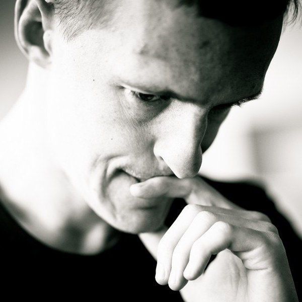Николай Косарев,
Quintiq, Голландия, разработчик и аналитик
-
«Нас учили разбираться в том, что ты делаешь, а не просто зубрить и заучивать»

Ольга Кукина,
бизнес-аналитик в селинговом агентстве при ВГТРК, Омск
-
«Матфак научил меня быть "анти-шестеренкой" и уметь браться за любые задачи и проекты»
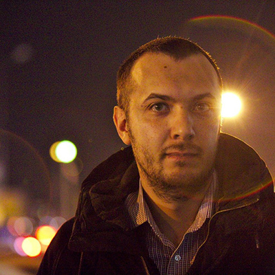Сергей Корсаков,
Яндекс, Москва, менеджер проектов в отделе контент-системы
-
«Благодаря обучению здесь люди становятся успешнее»
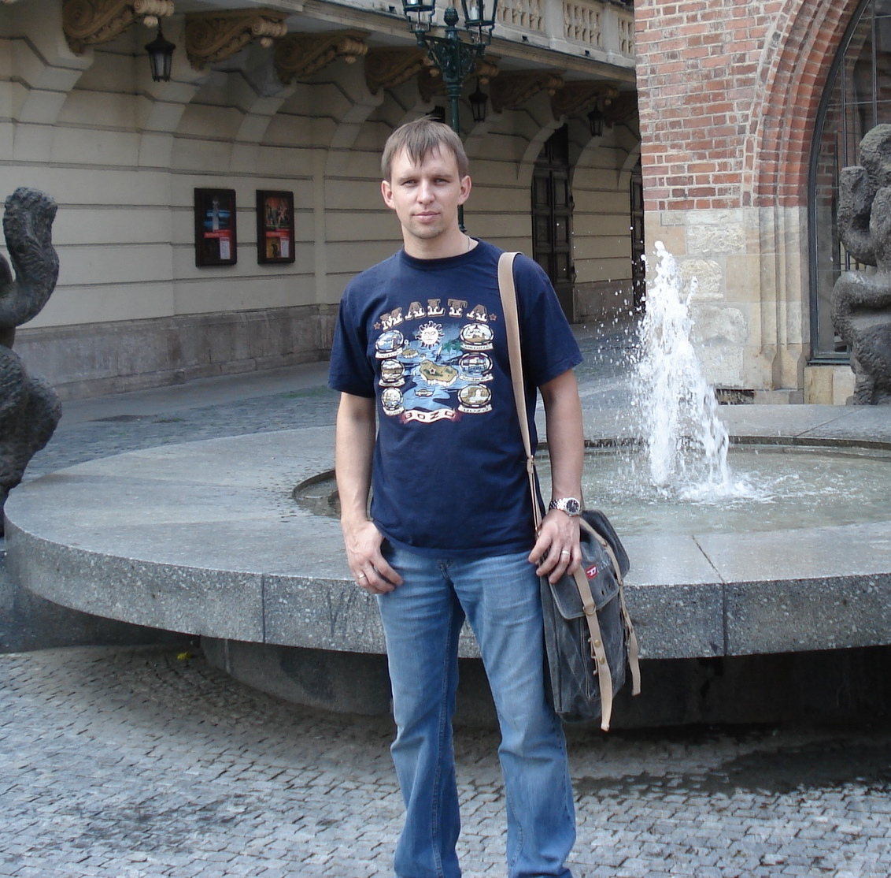Евгений Мельников,
ООО «РОСИНТЕР РЕСТОРАНТС СИБИРЬ», г. Новосибирск, Красноярск, Новокузнецк, региональный управляющий
-
«Традиции факультета – очень важная часть нашей жизни»
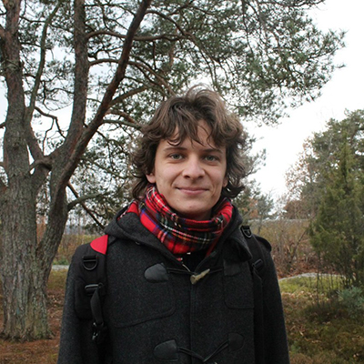Никита Кардаков
ведущий разработчик в NASP/Plingm, Стокгольм
-
«Для достижения высоких целей нужно много трудиться»
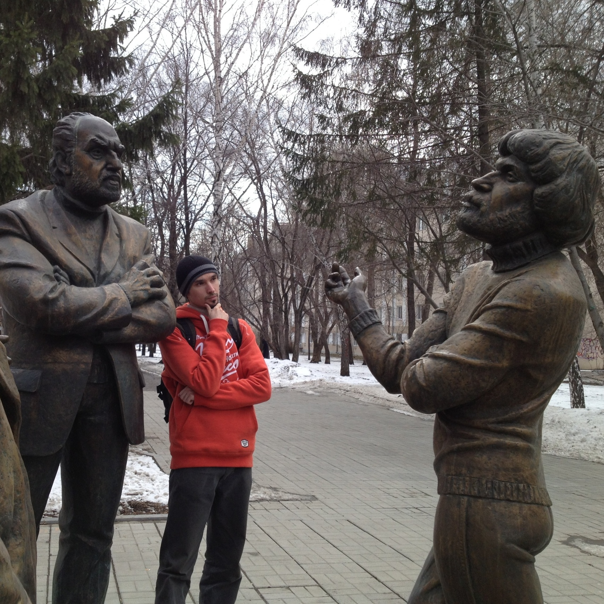Павел Сумароков,
Al Digit, Омск, директор
-
«Это лучшее в Омске место, в котором преподают Computer Science»
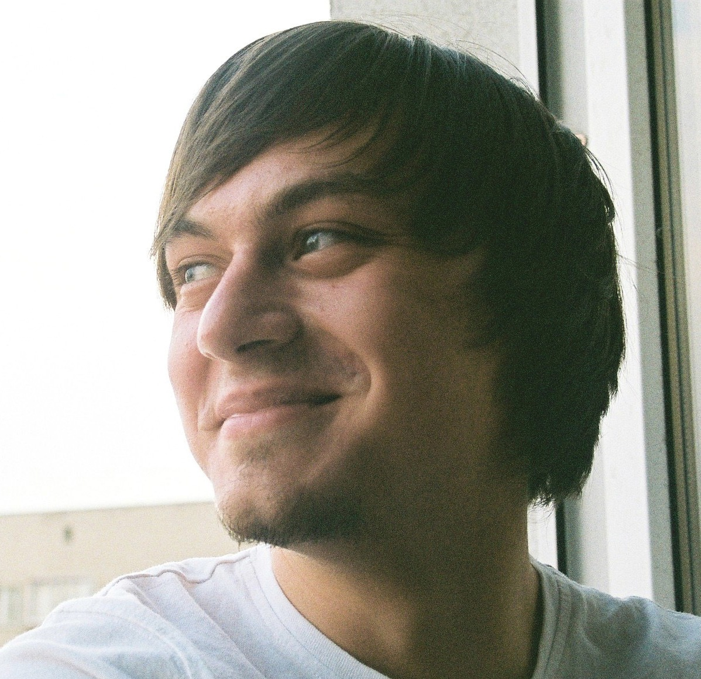Александр Шестаков,
Wooga, Берлин, разработчик
-
«Всем что у меня сейчас есть, я обязан матфаку!»
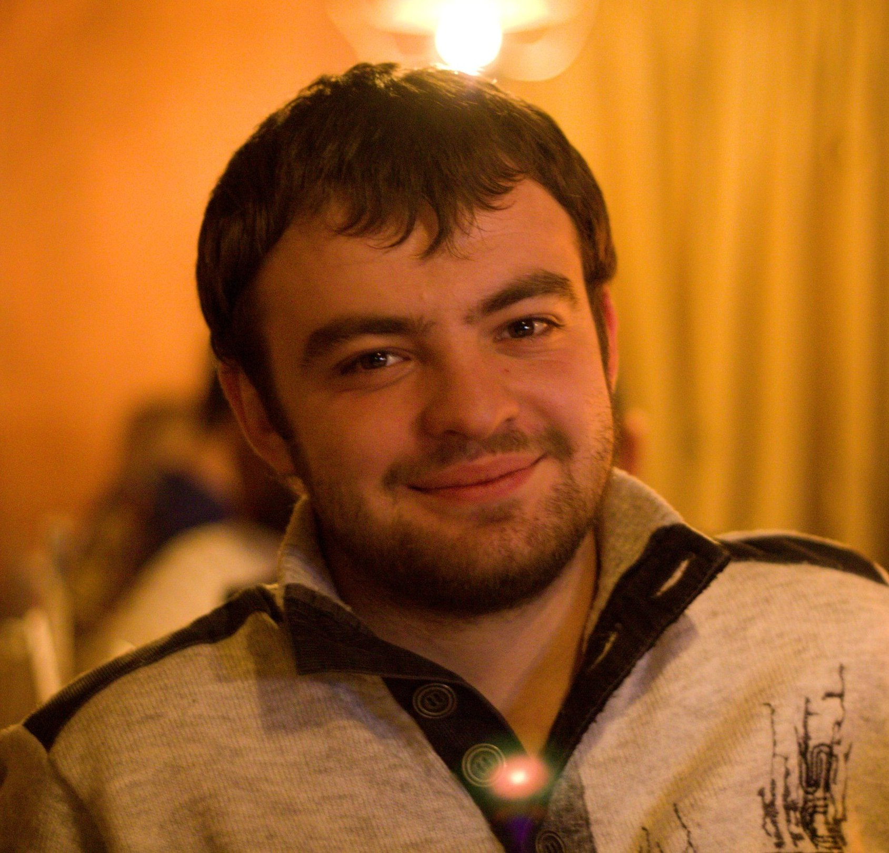Юрий Дворжецкий,
Luxoft, Омск, разработчик
-
«Если бы я закончил не матфак, то вряд ли бы я связал свою жизнь с программированием»
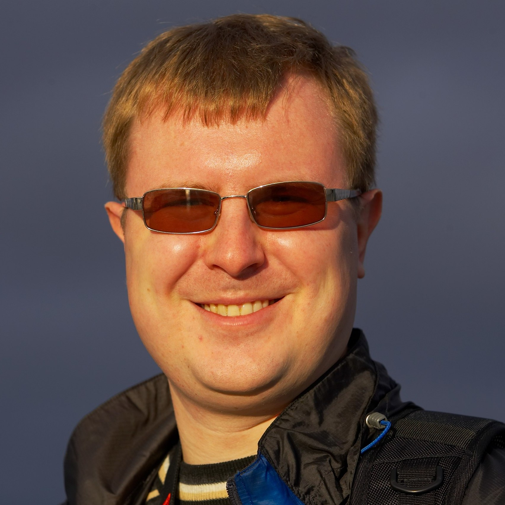Юрий Легачев,
Luxoft, Сиэтл, архитектор программных систем
-
«Математический склад ума дает предпринимателю большое преимущество перед остальными»
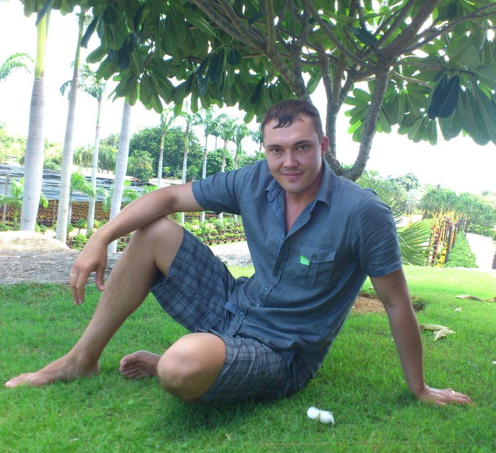Максим Лахтин,
vseplatezhi.ru, Омск, один из основателей и генеральный директор
-
«Самое ценное, что я приобрела за эти пять лет - это, пожалуй, научилась учиться»
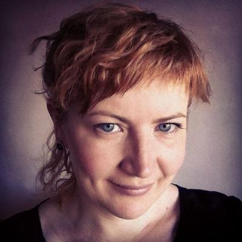Мария Шмидт,
DPD, Новосибирск, директор по операциям региона Сибирь и Дальний Восток
-
«Знания и навыки, приобретенные на матфаке - это мощный инструмент для построения нового»
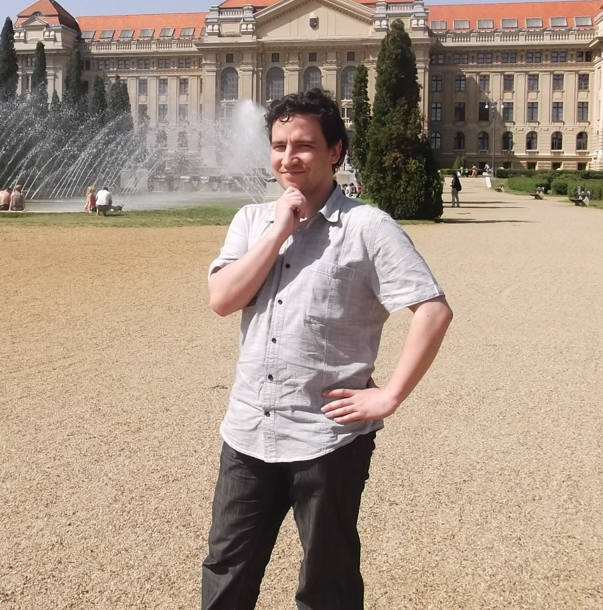Тимур Шевляков,
разработчик в Borland Microfocus, Австрия